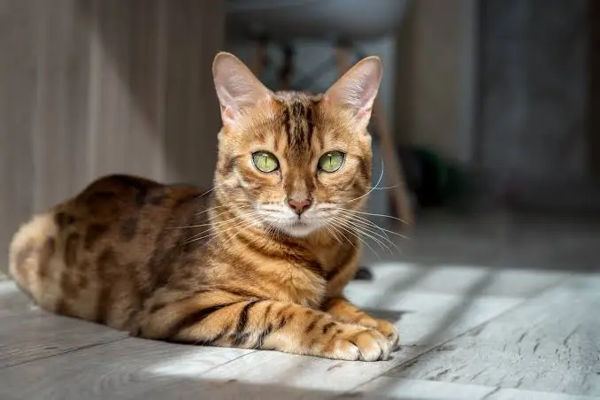
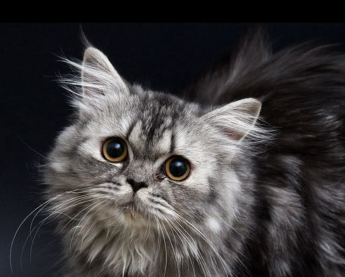

Bengáli rövid bemutató
A bengáli macska különleges, leopárdra emlékeztető mintázatú, játékos és energikus fajta. Nagyon intelligens, kíváncsi és szeret mozogni.A további információkért menj át a „Bengáli és Csincsilla” fülre az oldalon!


Csincsilla perzsa rövid bemtatása
A csincsilla perzsa elegáns, hosszú szőrű, nyugodt és kedves macskafajta. Gyönyörű, ezüstös bundája és kifejező szemei igazán különlegessé teszik.A további információkért menj át a „Bengáli és Csincsilla” fülre az oldalon!